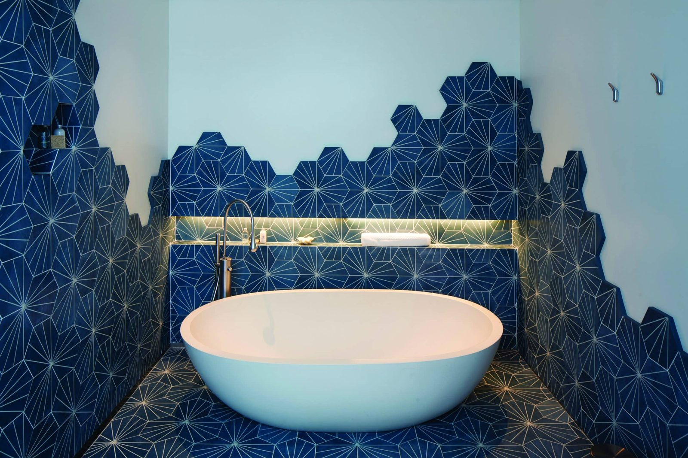
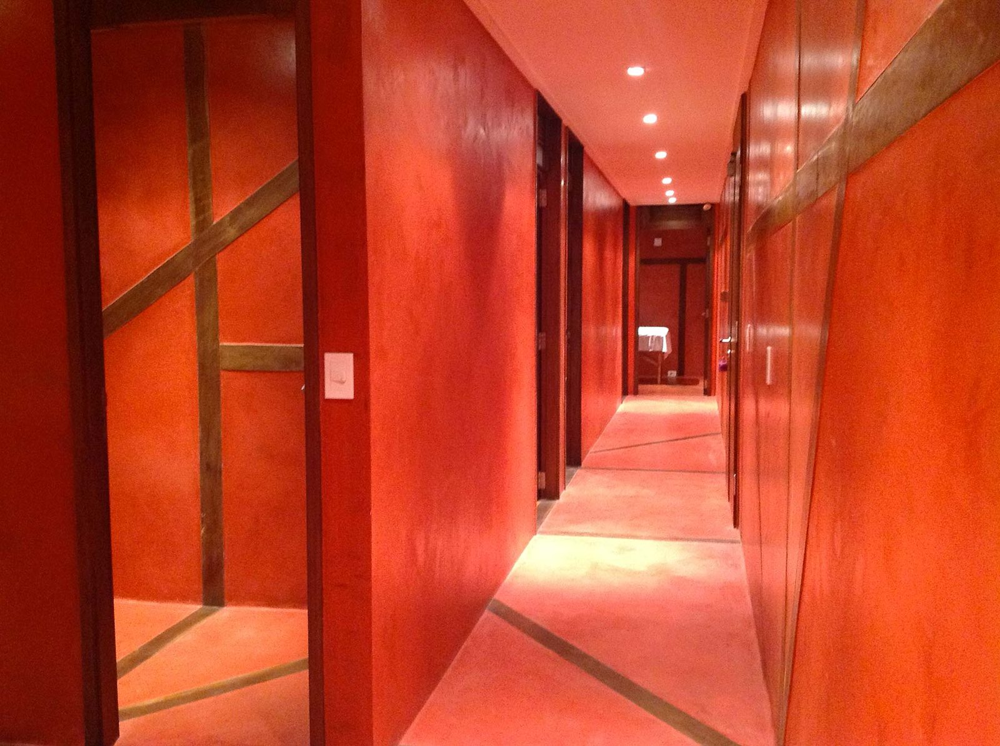

Creativity, made physical
Every VIK building is a commission. Architecture, interiors and furniture designed for the place they stand in.
Between the ocean and the countryside, discover a connected world of art, design, nature, gastronomy, wine, wellness and the unmistakable rhythm of Uruguay.
Staying at VIK José Ignacio is not about choosing a hotel room. It is about choosing a very specific kind of experience, shaped by the property you stay in and the season in which you visit.
Three retreats sit within a few kilometres of each other. Bahía lives within the dunes on Playa Mansa. Playa rises above the point as an intimate expression of art and design. Estancia opens onto the traditions, horses and vast countryside of Uruguay.
They are not three separate hotels. Dining, wellness, art, events, horses, nature and the Journey Designer team run across all of them — so wherever you sleep, the whole destination is open to you.
The destination→
Four thousand acres of open country, horses and open-fire gastronomy, rooted in Uruguayan tradition.

Carlos Ott architecture and contemporary art above the point, with the Atlantic on three sides.

Design bungalows set into the dunes. Relaxed, social, and the easiest of the three with children.

The cultural and celebration venue of the destination. Weddings, retreats and programming.

Beachfront dining, music and the sunset ritual that defines a José Ignacio evening.

Movement, strength, recovery and treatments — nature-led wellbeing across the destination.
Beach, countryside or architecture. Social energy or privacy. Move across the three and see which one is yours.
01
Estancia VIK
Countryside · 20 min inland
Four thousand acres, horses and fire. The Uruguay that existed before the coast was discovered.
See the case→
02
Playa VIK
Oceanfront · on the point
Carlos Ott architecture and contemporary art, with the Atlantic on three sides and almost no one else.
See the case→
03
Bahía VIK
Playa Mansa · in the dunes
Design bungalows in the beach dunes on the calm side. The most social of the three, the easiest with children.
See the case→
Every VIK building is a commission. Architecture, interiors and furniture designed for the place they stand in.
Each retreat is formed by its landscape, its local identity and the seasonal rhythm of the coast.
VIK wines from the Millahue Valley run through every list, every pairing and every cellar.
Local, seasonal, farm-to-table and open fire. Dining as a shared cultural experience.
Movement, recovery, nourishment, sleep, social connection and balance — built into the stay.
Journey Designers, personal itineraries and human service. Warm, but sophisticated.
José Ignacio transforms across the year. Peak season is vibrant, social and full of events. March and the shoulder season are quieter, more intimate and restorative. The countryside is at its best when the coast empties.
Vibrant, energetic, social. Events, dining and nightlife every evening.
Long days on the water. The beach clubs at their best.
Quieter, more intimate, restorative. Space and disconnection.
Estancia comes into its own. Horses, fire and empty landscape.
Three house restaurants, one beach club and a culinary programme built on open fire, the garden and the Atlantic — all open to guests of any of the three retreats.
Everything below is arranged by your Journey Designer, whichever retreat you are staying in.
Criollo and Quarter horses across open pampas, from the Estancia to the lagoon. The signature VIK experience, and the reason many guests come back.
Pick from the garden, then cook it over embers.
Movement, strength, treatment and rest, on the dune deck.
Every VIK room was commissioned from a different artist. See the works, the chapel and the sculpture terrace with the house curator.


An estancia reimagined as a living gallery, where the art was made for the room it hangs in.Architectural Digest2018
The most architecturally ambitious house on this coast, and the least interested in saying so.Wallpaper*2019
Three houses a few kilometres apart, held together by one singular sense of place.Condé Nast Traveler2021
Bookassist · PayPal accepted
Best rate, booked direct
guestexperience@vikretreats.com
If you want the ocean, and the art that faces it
If you want horses, fire and open country
If you want the bay, the pool and the people
guestexperience@vikretreats.com